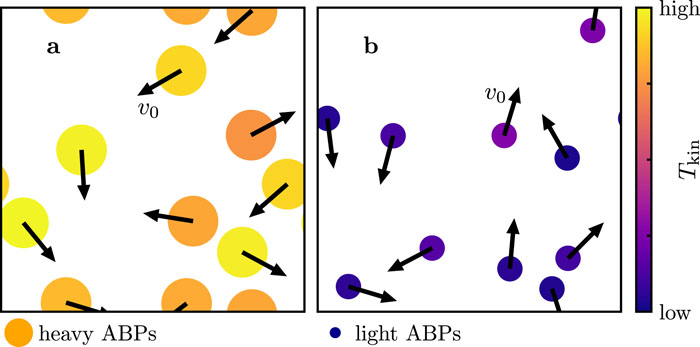
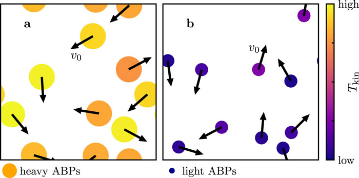

Seminar in Simulation and Computational Modelling II
Temperature in Active Systems
How to Define Temperature in out of equilibrium systems
Ana Bensabat Paulino
Ana Bensabat Paulino
Temperature in equilibrium:
Caveats:
The standard definitions of temperature fall short for non-Hamiltonian, non-equilibrium and small systems.
[1] A. Puglisi,
1
There is a perception of hotness or coolness when we touch a piece of glass or put a finger into a non-equilibrium liquid holding swimming bacterias. Can we introduce a measure to quantify this experience?
Out of equilibrium system:
Questions:
[2] L. Hecht,
2
[2] L. Hecht,
3
[2] L. Hecht,
4
The fluctuation-dissipation theorem (FDT) is a key principle in statistical mechanics that relates the fluctuations in a system's properties with the dissipation of energy in that system [3].
Preliminaries:
The dynamical response of an operatorBack-of-the-envelope derivation for an harmonic oscillator:
Consider the equation of motion for a perturbed harmonic oscillator: \[\begin{align} \ddot{x} + \omega_0^2x + \gamma\dot{x} = f/m. \end{align} \] The response function can be obtained by taking the Fourier transform of the equation of motion: \[\begin{align} \chi(\omega) = \frac{1}{m}\frac{1}{-\omega^2+\omega_0^2-i\omega\gamma}. \end{align} \][3] P. Chaikin and T. Lubensky. Principles of Condensed Matter Physics. Cambridge University Press, 1995. Chap. 7
5
[2] L. Hecht,
6

7
Molecular dynamics simulations were conducted by Hecht
Non-interacting and interacting ABPs were considered in the dilute regime.
[2] L. Hecht,
9
Given the heavy mass dependence of the kinetic and configurational temperature, are the different temperature definitions coherent after a mass rescaling?
[2] L. Hecht,
8
[2] L. Hecht
9
10
 
